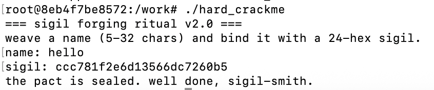

hard_crackme is a 64-bit ELF. The entry point passes FUN_001010c0 to __libc_start_main, so that function is main, and everything interesting lives inside it.
On startup the program prints what it expects:
The sigil must be 24 hex characters. I followed the entered sigil from the input to the place where it is used.
=== sigil forging ritual v2.0 ===
weave a name (5-32 chars) and bind it with a 24-hex sigil.
name:The length check does not look like a length check:
len comes from strlen and is unsigned. If the name is shorter than five characters, len - 5 wraps around to a huge value, which is also above the bound. So one comparison checks both limits, 5 to 32.
The character filter is the same trick at byte width:
Subtracting 0x20 puts every allowed character into 0 to 0x5e. Anything below 0x20 wraps around and fails the same comparison.
Before the checks, the newline left by fgets is removed with buf[strcspn(buf, "\n")] = 0.
if (len - 5 < 0x1c)
if (0x5e < (byte)(*p - 0x20)) fail;The sigil length is checked first, and only inside that branch does the program touch the name again. In the decompiler the loop works with three variables, seeded with 0x811c9dc5, 0xcbf29ce4 and 0x9e3779b9.
All three advance in a single pass over the name:
The first state is FNV-1a. The second adds each character multiplied by its position and rotates left by seven. The third shifts each character left by a counter that grows by three and wraps at 15, XORs it into the state and rotates left by thirteen.
The position counter starts at one, not zero.
MOVZX EAX, byte ptr [RBP]
ADD RBP, 1
MOV ECX, EAX
XOR EDX, EAX ; fnv ^= ch
IMUL ECX, ESI ; ch * position
ADD RSI, 1
IMUL EDX, EDX, 0x1000193 ; fnv *= FNV prime
ADD ECX, R8D ; += accumulator
ROL ECX, 7
MOV R8D, ECX
MOV ECX, EDI
ADD EDI, 3
AND ECX, 0xf
SHL EAX, CL ; ch << (shift & 15)
XOR EAX, R9D
ROL EAX, 0xd
MOV R9D, EAX
CMP R10, RSI
JNZ loopAfter the loop each state passes through the same five-step mixer:
Ghidra prints the second multiplier as -0x7b935975, which is the same 32 bits as 0x846ca68b.
The shifts mix the high bits into the low bits, so in the end every output bit depends on every input bit, and changing one bit of the name gives a completely different result.
The three states are not finalised independently. Each one is folded into the next before being mixed, and the first is folded back into the last at the end:
x ^= x >> 16;
x *= 0x7feb352d;
x ^= x >> 15;
x *= 0x846ca68b;
x ^= x >> 16;
fnv = mix(fnv ^ 0xdeadbeef);
simple = mix(simple ^ fnv);
salt = mix(salt ^ simple ^ 0xcafebabe);
group1 = fnv ^ salt;
group2 = simple ^ group1;
group3 = salt;The digest is turned into text by a single call:
I noticed that the format string has three %08x but only two arguments are passed. By the calling convention the third value is taken from the next argument register, the sixth one, r9d. So I went to the listing to see what r9d holds at the moment of the call: it is the finalised third state.
snprintf(buf, 0x19, "%08x%08x%08x", uVar30, uVar29 ^ uVar30);
XOR R9D, EAX ; salt ^= salt >> 16
XOR EAX, EAX ; al = 0, required for a variadic call
XOR ECX, R9D
XOR R8D, ECX
CALL snprintfThe comparison of the computed sigil with the entered one is unreadable in the decompiler: a wall of auVar3 [15], auVar12 [13], unkuint9 and CONCAT81. In the listing it is SSE instructions. I didn't analyze it in detail and accepted that this is just the compiler's optimized way of comparing all 24 bytes.
Early in main:
If ptrace fails, the program prints that someone is watching. Patching is disallowed by the challenge rules.
I wanted to try dynamic analysis for the first time, but it did not work. My machine is an Apple Silicon Mac, so gdb could not run the x86-64 binary directly. Under Docker with Rosetta the program runs, but gdb failed with Couldn't get CS register.
if (ptrace(PTRACE_TRACEME, 0, 1, 0) == -1)
puts("the spirits sense a watcher...");The sigil is computed from the name, so the solver simply reimplements the algorithm.
M = 0xffffffff
def rotl(x, n):
return ((x << n) | (x >> (32 - n))) & M
def mix(x):
x = ((x ^ (x >> 16)) * 0x7feb352d) & M
x = ((x ^ (x >> 15)) * 0x846ca68b) & M
return x ^ (x >> 16)
def sigil(name):
fnv, acc, salt = 0x811c9dc5, 0xcbf29ce4, 0x9e3779b9
shift = 0
for position, ch in enumerate(name.encode(), start=1):
fnv = ((fnv ^ ch) * 0x01000193) & M
acc = rotl((acc + ch * position) & M, 7)
salt = rotl(((ch << (shift & 0xf)) & M) ^ salt, 13)
shift += 3
fnv = mix(fnv ^ 0xdeadbeef)
acc = mix(acc ^ fnv)
salt = mix(salt ^ acc ^ 0xcafebabe)
group1 = fnv ^ salt
group2 = acc ^ group1
return f"{group1:08x}{group2:08x}{salt:08x}"
print(sigil("hello"))
name: hello
sigil: ccc781f2e6d13566dc7260b5
the pact is sealed. well done, sigil-smith.
uVar25 below), so my script gave a wrong result and I had to dig into the assembly.%08x but only two arguments. The third value comes from the next argument register.uVar30 = uVar30 ^ uVar25 ^ uVar25 >> 0x10;
XOR R9D, EAX ; salt = salt ^ (salt >> 16), written back
XOR ECX, R9D ; and only then usedThis write-up was written with the help of AI, based on my own analysis, notes and reasoning. I also used AI as a reference for documentation during the analysis.
← all writeups